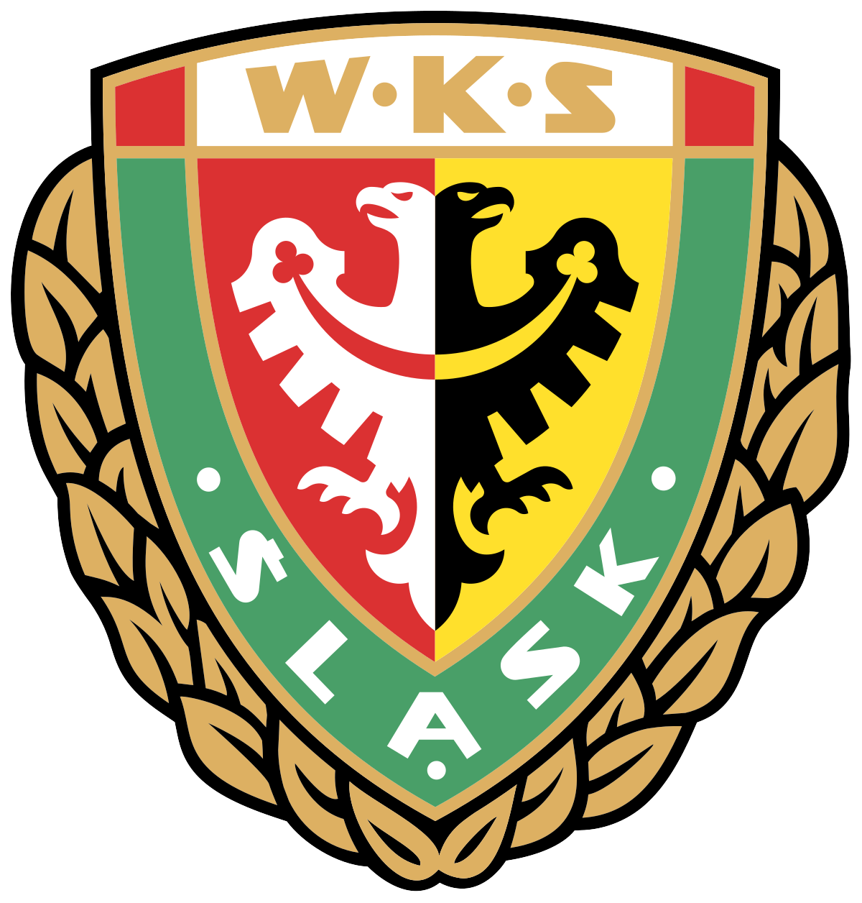

Soccer is my biggest passion. My passion for soccer comes from my dad and my older brother. I have played in multiple clubs in multiple countries throughout my life and currently I am a part of the mens soccer team here at IIT. I am also a life long Arsenal supporter.
Soccer Career:
WKS Slask Wroclaw - This was the first club I was a part of that is worth mentioning. I joined the team in 2013 and stayed there all the way until 2020. Therefore, a large part of my life revolved around this club.

FC Stade-Lausanne Ouchy - After moving to Switzerland I had to say goodbye to WKS and find myself a new team. After a couple of trials in different clubs, I ended up in FC Stade-Lausanne Ouchy. I faced a couple of challenges, the biggest one being the early language barrier, due to everyone speaking french. However, after some time has passed I was able to form connections with my teammates and excel in my new role.
Indiana Tech - After moving to the US, I spent my first year in Indiana Tech. I was very lucky to be part of a very successful team. Our biggest achievements that year included winning the WHAC tournamet